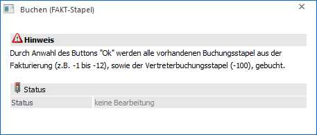
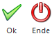

In diesem Menüpunkt, welcher in der WinLine FIBU über
1 Buchen
1 Buchen
1 FAKT - Stapel
oder in der WinLine FAKT über
1 Abschluss
1 Buchungsstapel übernehmen
aufgerufen werden kann, können die beim Rechnungsdruck (WinLine FAKT - Einkauf und Verkauf) und der Vertreterabrechnung (WinLine FAKT) erzeugten Journalzeilen automatisch in die WinLine FIBU übernommen werden. Ein Editieren der Stapel ist hierbei nicht möglich.
Hinweis
Sollen die Stapel VOR der Übernahme nochmals kontrolliert werden, können die Buchungsstapel (Nummer "-1" bis "-12", eventuell abweichende FAKT-Stapel und der Stapel "-100") im Programm WinLine FIBU im Menüpunkt
1 Buchen
1 Buchen
1 Dialog Stapel
geladen, editiert und gedruckt werden, bevor sie endgültig verbucht werden.

Ø Status
An dieser Stelle wird angezeigt, ob die Übernahme stattfindet (in Bearbeitung) oder nicht (keine Bearbeitung).
Buttons

Ø Ok
Durch Anwahl des Buttons "Ok" bzw. der Taste F5 wird die Übernahme gestartet. Hierbei werden vor der Übernahme sämtliche Zeilen auf ihre Korrektheit überprüft (z.B. ob das Konto vorhanden ist, ob der Steuersatz vorhanden ist, ob das Datum innerhalb der Wirtschaftsjahr-Grenze liegt, etc.).
Hinweis
Bei eventuell auftretenden Fehlern wird ein Protokoll gedruckt, anhand dessen die Buchungen editiert werden können.
Ø Ende
Durch Anwahl des Buttons "Ende" bzw. der Taste ESC wird das Fenster geschlossen und keine Übernahme durchgeführt.